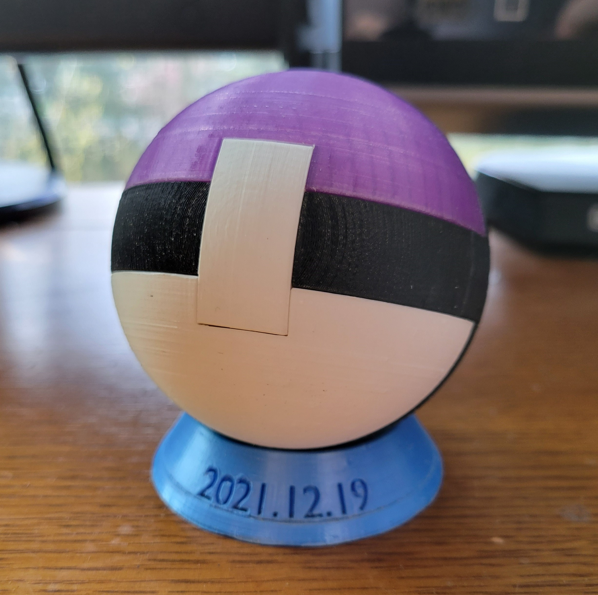
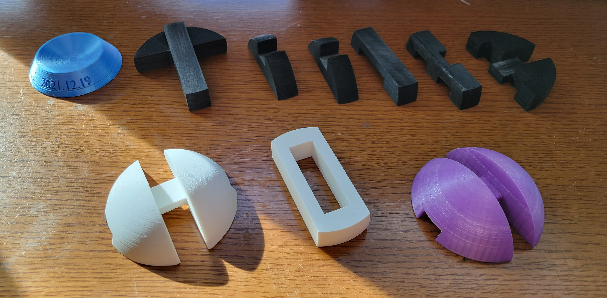
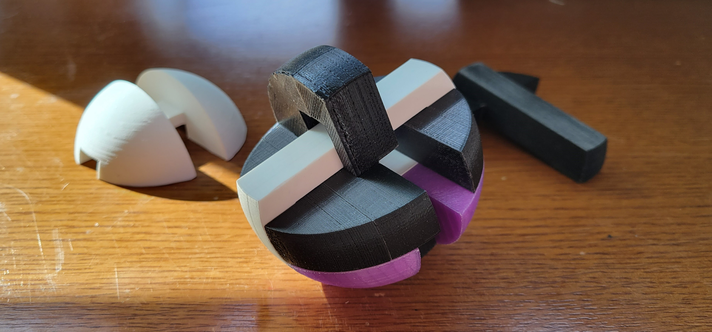

My girlfriend loves puzzles, so I made her this puzzle sphere for our four-month anniversary. I modeled it in Blender based on measurements from a similar injection molded version of the puzzle that was missing pieces.
-
3D Printed Puzzle Sphere
(Spring 2022)The puzzle sphere
The most challenging part of the build was ensuring the pieces had enough clearance to assemble, but still fit together snugly.
To determine the necessary adjustments, I printed and measured test parts. X and y-axes were consistently a fraction of a millimeter under nominal dimension, which was acceptable. The z-axis was printing about 3% too high, so I adjusted the scale of each piece accordingly, and with minimal sanding, the puzzle assembled.
If I were to try printing it again, I might shrink each piece 0.5% more, which may allow it to assemble without sanding. Alternatively, I might look into calibration software for my printer.
- 
- 
The puzzle, disassembled and partially assembled